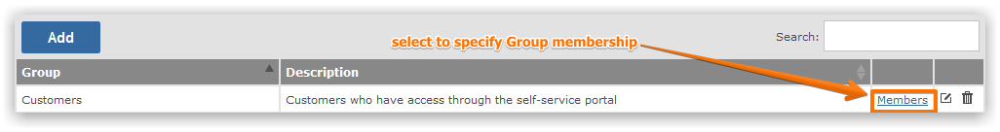
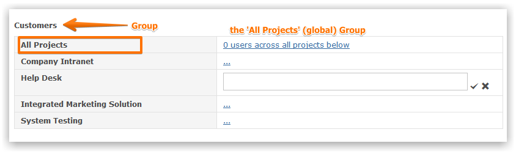
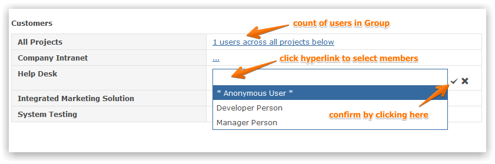

If you click on the Members link on the Group screen you will be able to define which projects the Group has access to and which users belong to the Group.

Users that are added to the All Projects group automatically have access to every project and therefore are Global Users.

To define project-specific access click on the hyperlink on the right of the project(s) and select the users from the multi-select drop-down list. Global Users who are members of the All Projects group will not be available to select for Project Groups since by definition they have access to every project.

Whenever you change the selection list of users in a group you need to click on the tick to confirm (or the cross to cancel) your changes.